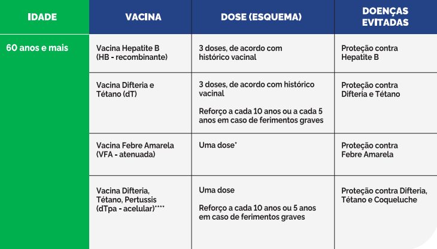

Calendário Vacinal

Fonte: Seconci.
As vacinas são:
Vacina Hepatite B (HB - recombinante) (três doses, de acordo com histórico vacinal).
Vacina Difteria e Tétano (dT) (três doses, de acordo com histórico vacinal | Reforço a cada 10 anos, ou a cada 5 anos em caso de ferimentos graves ou se contatos de difteria).
Vacina Febre Amarela (VFA - atenuada) (Dose única caso não tenha recebido nenhuma dose até os 5 anos ou reforçar, caso a pessoa tenha recebido uma dose da vacina antes de completar 5 anos de idade).
20 a 29 anos: Vacina Tríplice viral (Duas doses).
30 a 49 anos: Vacina Tríplice viral (Uma dose - Verificar situação vacinal anterior).

Fonte: Gov.br
As vacinas são:
Vacina Hepatite B (HB - recombinante) (três doses, de acordo com histórico vacinal).
Vacina Difteria e Tétano (dT) (três doses, de acordo com histórico vacinal | Reforço a cada 10 anos ou a cada 5 anos em caso de ferimentos graves).
Vacina Febre Amarela (VFA - atenuada).
Vacina Difteria, Tétano, Pertussis (dTpa - acelular) (Uma dose - Reforço a cada 10 ou 5 anos, em caso de ferimentos graves | Recomendadas para profissionais da saúde, parteiras tradicionais e estagiários da saúde, que atuam em maternidades e unidades de internação neonatal - UTI/UCI convencional e UCI Canguru, atendendo recém-nascidos).
Referências: https://seconci-pr.com.br/calendario-vacinal-adulto-45-p. Acessado em 29/09/2024.
https://www.gov.br/saude/pt-br/vacinacao/calendario. Acessado em 29/09/2024.